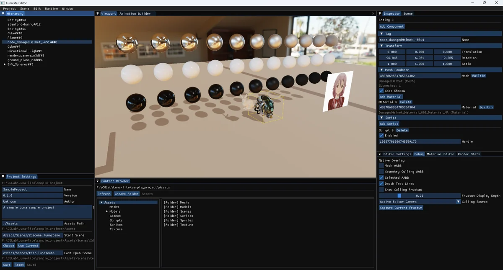
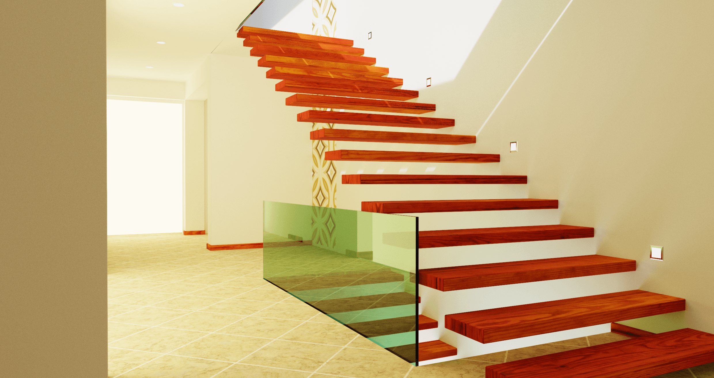
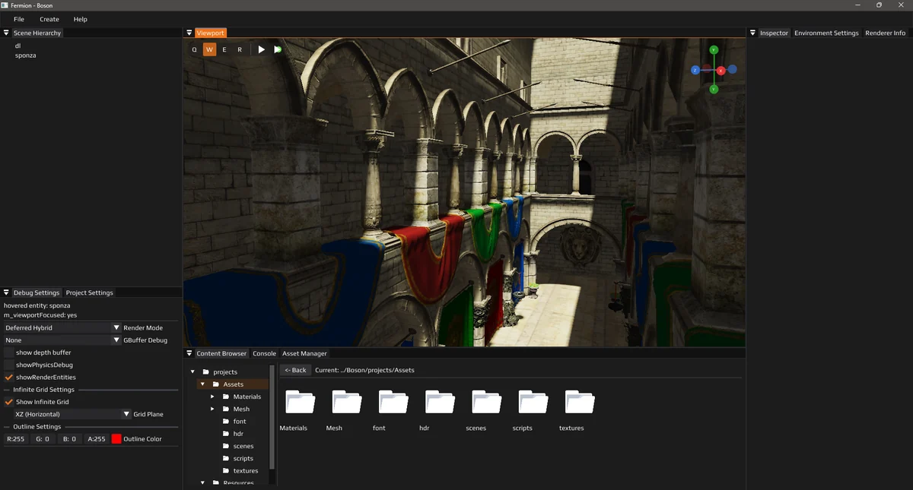
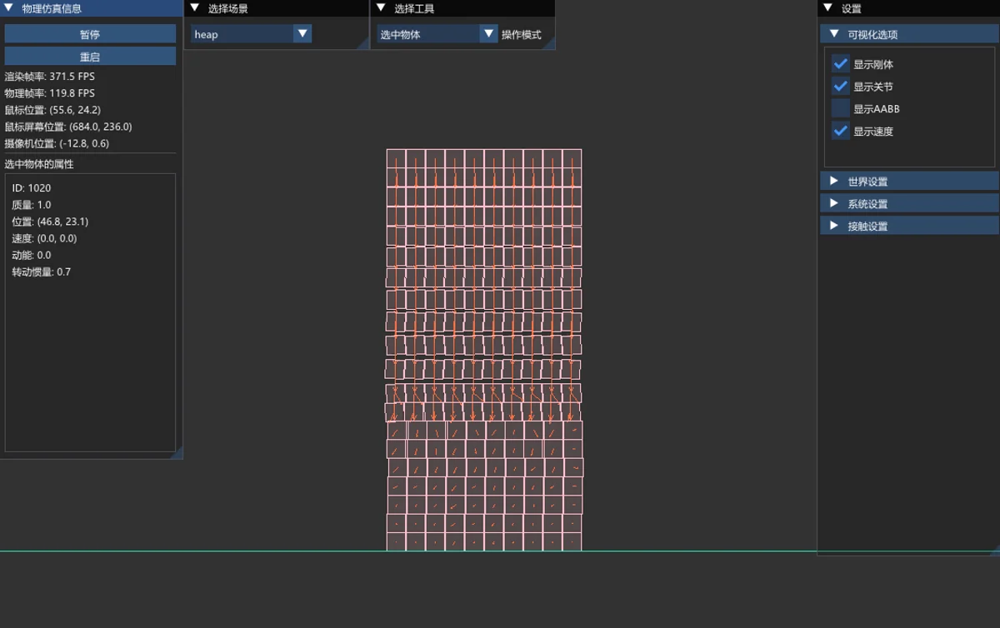
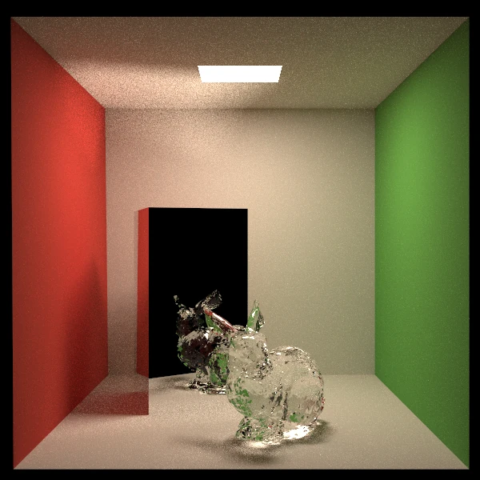
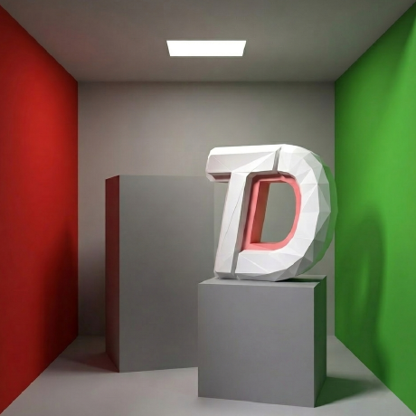

COMPUTER GRAPHICS & MATHEMATICS
Artichoke
Junjie Yang / 氧均竭
计算数学本科生 · 计算机图形学业余研究者
关注方向
- 游戏引擎
- 光线追踪
- 实时渲染
- GPU 编程
- 物理仿真
技术栈
AI coding
- Codex
最近在做
通过实现渲染器和撰写学习笔记，继续探索光线追踪、采样方法与现代图形 API。
为 TDSG 撰写图形教学文章和开发图形学软件。
学习更多游戏引擎技术。
开发 MiniEngine 新游戏引擎（长期）。
代码、实验与实现
Selected projects06


#include <vulcao/context.h>
vulcao::Context ctx{
{.app_name = "my-app"}
};
ctx.initialize(surface, extent);
05 / 物理仿真
PhysicalSimulation Physics Simulation Toolkit
面向物理模拟与仿真的 C++ 工具集。以二维刚体、堆叠和关节实验为起点， 通过 ImGui 界面交互与观察物理场景。目前处于物理引擎重构阶段。

06 / 离线渲染
PathTracing CPU Path Tracer
从零实现的 CPU 路径追踪器。支持多重重要性采样、光源采样、俄罗斯轮盘赌与多线程渲染， 用金属、玻璃等材质探索光在场景中的传播。
参与他人的项目，也把改进带回社区
Open-source contributions
使用 C++ / Vulkan 与 Python 构建的开源游戏引擎。
将编辑器网格改为基于射线与平面求交的无限网格，加入视角与 LOD 淡出，改善远处的显示效果。
修复编辑器相机的鼠标捕获状态，让视角可连续旋转；隔离捕获期间的 ImGui 输入，并在窗口失焦时释放鼠标。
开发中的组件式游戏引擎，结合 Vulkan 渲染、GPU 加速的 XPBD 物理仿真，以及由 Python 驱动的 C++ 反射与序列化系统。
修复编辑器相机意外滚转，使用独立的 yaw / pitch 控制，并限制俯仰角，使视角旋转更稳定。
完善 SDL3 手动安装与 CMake 环境配置说明，补充 SDL3_DIR 和 PATH 的设置方法。
循序渐进、注重实践的 Vulkan 图形编程教程。
修正渲染管线章节中缺失的分号、括号，以及文档中的拼写与标点错误。
可阅读源码的游戏引擎索引，便于研究不同引擎的实现。
补充 Infernux 引擎条目，帮助更多开发者发现并学习这一开源项目。
项目 Star 数与 PR 状态更新于 。
把学到的东西写下来
Notes & writing
把学习过程写下来，也把公式变成能够运行的代码。
Importance Resampling for Global Illumination
采样与全局光照150 行 C++ 路径追踪
渲染实践Specular Reflection · 微表面反射
材质与着色从零开始写一个路径追踪渲染器
Path Tracing 系列社区、交流与开源协作
Community & open source

TDS Graphics
我也在 TDS Graphics 分享图形学笔记，例如关于 Importance Resampling for Global Illumination 的学习与整理。 欢迎到社区网站阅读更多技术文章。
交流与联系
Get in touch
欢迎交流图形学、渲染和有趣的开源项目。